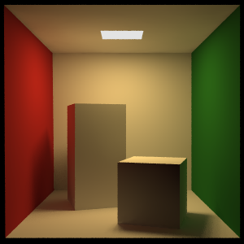
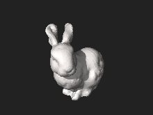
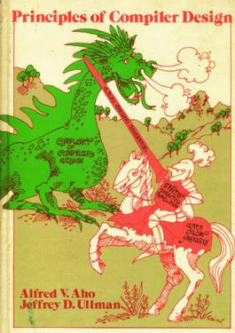

Over the years I've noticed some images (not diagrams or graphs) that are recognizable to programmers. These images also often have backstories that contain educational information, so here they are!
Lena

Lena is a Swedish model and this photo of her is from a Playboy cover. Her name is sometimes spelled "Lenna" to encourage her name to be pronounced as "leh-nah" instead of "lee-nah", which is a mildly amusing parallel to classification tasks. The full image has her mostly nude.
The photo was first used six months after release in 1972 because of the mixture of textures and colours for testing an image compression algorithm. This eventually led to JPEGs (first released 1992). It's was standard to use the image to showcase differences between image compression algorithms .
For obvious reasons, having a nude model be the face of all image processing has raised concerns. Still there are blog posts, papers and websites that still use Lena for image processing, though recently it's been about computer vision, style transfer, etc.
The Cornell Box

Anyone who has taken a graphics course has seen this box as it was first presented at a SIGGRAPH in 1984. It consists of five planes, an overhead light, a rectangular prism and cube. Variations are often seen with spheres of different materials such as dielectrics (glass), and metals instead of lambertians (the matte texture).
For a raytracer (or pathtracer) this tests a lot of important features. The shadowing of the rectangle onto the wall, contrasting wall colours that should emit some colour onto the white (this is called diffuse reflection).
As shown below, it can also showcase (or rather, suffer from) tone mapping, which is a technique used to map a set of colours to another to make the range look "dynamic" or at least correct. The image below has a bug where the lack of tonemapping causes the image to bug out where it tries to make the colour brighter than a pure white pixel.
Another issue with the image below is the noise, which can be fixed by more sampling in this specific case as it's a monte carlo ray tracer, so it uses some brute force and randomization as computers can't actually simulate light going in infinite directions.
Other classic rendering images include the Stanford bunny and the Utah teapot. It's been a meme to hide the Utah teapot into random scenes, and the teapot is the graphics version of "Hello World". It appears in Toy Story, the Simpsons, a Windows screensaver, and the Sims. Here's a 2.5 minute video about the teapot from Tom Scott.

The Big Red Mobile
CLRS! The iconic graphic on the textbook is obviously representative of a tree, but it's actually based on a piece of art. It was made by Alexander Calder in 1959. If you don't already know about mobiles, they're really cool, carefully engineered to work with equilibrium and air currents. Big Red, made from sheet metal and steel weird, can be found at the Whitney Museum of American Art!
Fun fact, Cormen (the C in CLRS) and co wanted to recolour the depiction to use red and black, but the Calder estate would not allow it. You can also purchase similar versions of the mobile.
The Dragon Book Cover

This popular compilers textbook is often referred to as the "Dragon Book" because of the 🐉.The Dragon's shirt says "Complexity of Compiler Design", the shield says "Syntax Directed Translation" and the sword says "LALR Parser Generator". The older edition also has the knight riding a horse labeled "Data Flow Analysis".

Syntax Directed Translation
The shield describes a method where the compilation is guided by the parser, and describes a more simpler subset of compilers. Syntax directed translation is a method of implementation used on context-free grammars (there's a whole linguistics thing behind this, but it's mostly what it sounds like) as a Type 3 language (on the Chomsky Heirarchy) could not be driven by the parser. There aren't too many commonly used languages that would be described as completely context free though there are languages that only have small caveats to become CFGs (not to be confused with control flow graphs, another compilers concept). If you want to read more, this Stack Overflow question is a good start.
Anywho, this is likely the shield because it prevents any blurring of "execution" and "compilation" by not having any ambiguities embedded in the grammar.
LALR Parser generator
LALR is a type of parser (look ahead left to right) that is simpler than an LR parser (left to right, rightmost derivation) but more powerful than LL parsers (left to right, leftmost derivation). Parser generators greatly improve the pains of writing a parser. GCC started off with a parser generated (it's handwritten as of 2004), CPython makes their own LL* parser generator (*it's a bit variant, CPython devs may correct me), Haskell+OCaml+Ruby are on LALR generators.
Writing a nice parser that works, is fast and surfaces nice syntax errors is a difficult design task, and a bit tedious after designed! Hence the dragon will be slayed by a LALR parser generator (YACC is taught in the book).
Data Flow Analysis
Data flow analysis is what it sounds like, tracking the movement of variables or other stored memory through a program. It is represented as the horse the knight is riding probably because it powers most things. I tried to think of why it might be removed from the cover, but there's no obvious answer and everything I came up with just sounded like a conspiracy theory.
O'Reilly Animals
Iconic meme-able book covers! But who draws them? Who picks the animals when the book is not just called Python? Why are they pictures of animals?
O'Reilly claims that this originated in the weirdness of Unix terms like awk, sed and yacc, and really the rest of it was "it just clicked". Many of them were drawn by one Lorrie LeJeune, and were done with pen and paper! There are also amusing stories of complaints from the arachnephobic who had to deal with spiders on covers. You can find a list of all the books and animals here.
Edie Freedman, the creative director who saw over this claimed that there's meaning to how all the animals that were selected though they aren't revealed. But here are some of the answers.
The Obvious Ones
Many (but not all) of the Python books have snakes, Rust has a crab, OCaml has a Camel, GNU has a gnu.
Oracle Bugs
"Oracle Essentials" has a cicada, "Oracle Regular Expressions" have spiders, "Oracle 8i Internal Services" has a bumblebee, dragonfly, dung beetle, lady bug, lantern fly, leaf insect, ants, praying mantis, etc. Very consistently bugs. The speculation is often "oracle software bad" but its likely just a meaningless theme (with each animal having a deep meaning) and not meant to piss off Oracle. It is special as even Python is not consistently snakes, and other groups of books like Google, Regular Expressions, Javascript, etc, do not have any themes.
Perl Camel
Here's a weird one, as the obvious choice would be an oyster for the pearl. Wall Street Journal claims that Larry Wall, creator of the language, wanted a camel because like Perl it's ugly but can go a long way without water. Some also claim it's a reference to the proverb "a camel is a horse designed by a committee" and how Perl is easily identifiable as a mixture of other languages. It's cool as the camel as adopted as Perl's mascot after the O'Reilly book.
Python (entirely my conspiracy)
Not all of the Python books have snakes! "Data Wrangling with Python" has a lizard, which seems to be a reference to giving Python "legs" to work with data. "Python Programming On Win32" is a crocdile, which to me just screams "PYTHON BUT MAKE IT SCARY". "Learning Python" is a rat and "Python Coobook" is a rabbit, which may be a reference to them being more introductory Python books as they're snake food.
MacOS Powder Explosion Wallpaper
MacOS has always had some iconic wallpapers, especially of California views so this one stood out to me as "this should be generated". This isn't related to programming but I thought I'd investigate it since I've always wanted to know.

Apple explicitly scrubs EXIF data, which is all that microchip tracking metadata that are automatically attached to your images for location, time, device, shutter speeds, etc. The one time the EXIF was leaked on one image it had a bunch of nitpicking notes like "fill in this area close to the edge with more tree so it doesn’t create awkward negative shapes" and "darken some of the stars that are a bit smaller and darker, so there is a little more difference in the starfield" which I guess could be expected for the quality of the Apple wallpapers and the anxiety that comes with being the photographer for a MacOS wallpaper.
Spoiler alert, I didn't actually figure out if these were generated or photographed, but I did figure out how one would generate/photograph them, and that they are very probably photographed. Here is the precedence: photographed ethereal Apple productions.

How to Photograph
As expected, making these powder explosions would be a pain. One must first have the space, the high speed camera (powder flying through the air like that lasts less than a second) and cover all of the equipment. The powder is typically flour, and mixed with "holi" powder which is just high pigment powder for photoshoots/parties/crafts. It seems that many photographers actually have people in suits to throw the powder and those shots tend to look more like powder clouds than explosions. I found someone who did something a bit more clever, which involves a simple canon mechanism (silicon tubing and a pump) and sound triggered.
How to Render
3D animation software of course would also enable you to do this, and in my opinion produces better results.
The general approach is to start with a sphere, create some noise outwards like a spiky ball. Turn those vectors into dots going out, then configure those dots to create more particles in the direction of the velocity. Wind and air drag simulations are built into most animation software.
End
Please send me more lore at hello@carolchen.me
Have a nice day <3